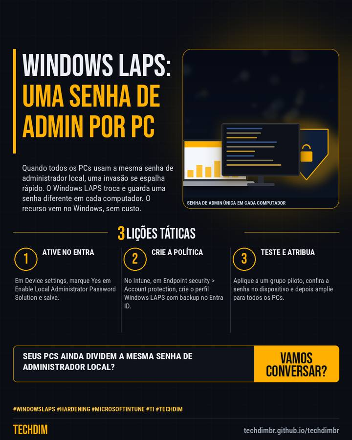

Dica prática
Windows LAPS: senha de administrador local diferente em cada computador, em 5 passos
Quando todos os PCs usam a mesma senha de administrador local, uma invasão se espalha rápido. O Windows LAPS troca e guarda uma senha diferente em cada computador. O recurso vem no Windows, sem custo.

Resumo da dica
- 1) Use Windows 11 (ou 10 atualizado) em PCs ingressados no Entra ID. 2) No Entra: Devices > Device settings > Enable Local Administrator Password Solution (LAPS) = Yes
- 3) No Intune: Endpoint security > Account protection > Create policy > Windows > Local admin password solution (Windows LAPS). Backup no Entra ID e regras da senha
- 4) Atribua a um grupo piloto e confira em Devices > Local administrator password recovery. 5) Só funções como Cloud Device Administrator veem a senha. Depois, amplie
Seus PCs ainda compartilham a mesma senha de administrador local? Troque por uma senha única por computador e limite quem a vê.
Por que vale a pena
Passo a passo baseado na documentação da Microsoft para trocar a senha de administrador local repetida por uma senha única e rotacionada em cada PC, reduzindo o risco de movimentação lateral.
Passo a passo
- Ative no Entra. Em Device settings, marque Yes em Enable Local Administrator Password Solution e salve.
- Crie a política. No Intune, em Endpoint security > Account protection, crie o perfil Windows LAPS com backup no Entra ID.
- Teste e atribua. Aplique a um grupo piloto, confira a senha no dispositivo e depois amplie para todos os PCs.
Fontes consultadas
Mais do Radar de hoje
- Notícia de tecnologia Vazamento de dados custa R$ 7,44 milhões no Brasil: recorde no relatório 2026 da IBM
- Alerta de segurança ConnectWise Cloud Backup suspenso após invasão a ambientes Microsoft 365 de clientes
- Serviço TECHDIM Software sob medida com IA: Claude Code, Gemini e Antigravity, sempre com revisão humana
Leia também
Este texto resume as fontes citadas na data de publicação. Confira sempre o aviso oficial do fabricante antes de agir em produção.